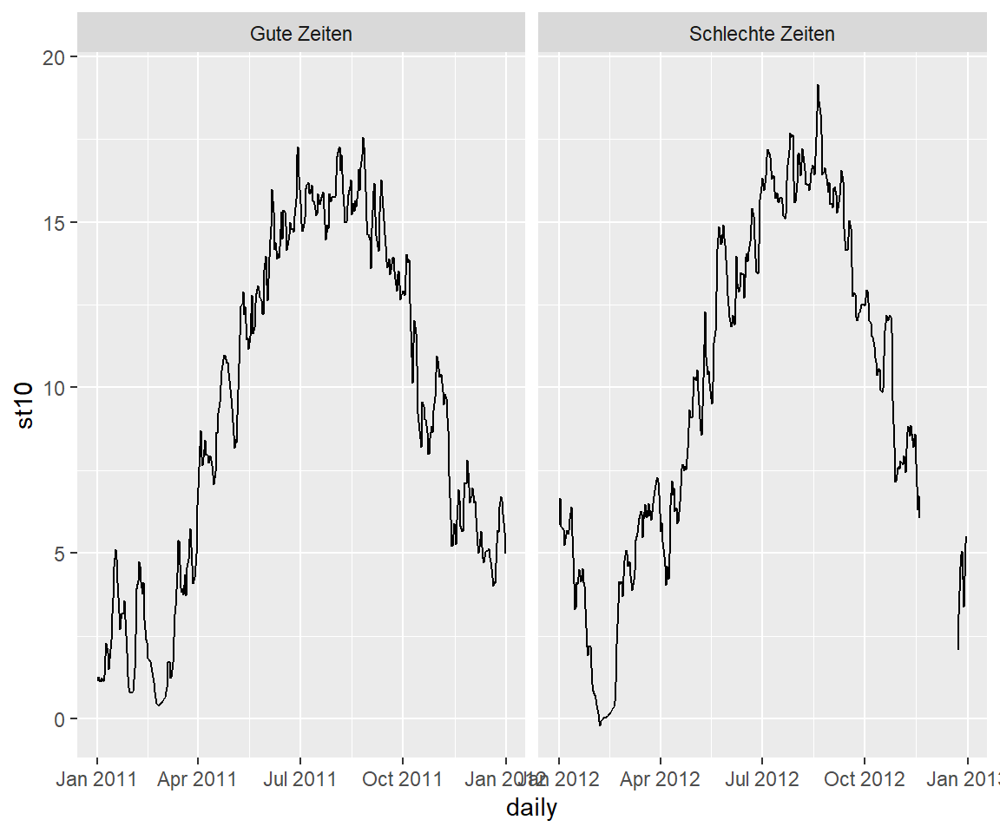

- 1 Einleitung
- 2 Erste Schritte mit R
- 3 Grundlagen
- 4 Wie lese ich Daten ein
- 5 Daten manipulieren
- 5.1 select() - Variablen auswählen (spaltenweise)
- 5.2 filter() - Filtern von Variablen (zeilenweise)
- 5.3 arrange() - Sortieren des Datensatzes
- 5.4 mutate() - Erstelle neue Variablen
- 5.5 summarize() - Zusammenfassung von Variablen
- 5.6 group_by - Gruppiere Variablen
- 5.7 across() - Anwenden von Funktionen auf Spalten
- 5.8 joins
- 5.9 pivot_longer() - Long data format
- 5.10 pivot_wider() - wider data format
- 6 Explorative-Datenanalyse
- 7 Datenvisualisierung
- 8 Karten erstellen in R üåç
- 9 Statistische Auswertungen
- 10 Datenmanagement
- 11 Reporting in Rmarkdown
- 12 Github
- 13 Bookdown
- 14 Blogdown
- 15 Shiny
- 16 Diverses
16.4 Visualisation
16.4.1 Superscripts and subscripts
Um Zahlen an Plot labels hoch- oder tiefzustellen, bspw. Achsenbeschriftung oder Titel, kann man die Befehlen èxpressionundpaste` verwenden. Expression ermöglicht die Verwendung von Sonderzeichen und paste ermöglicht die Sonderzeichen mit normalem Text zu verknüpfen.
# Erstelle willkürlich Daten a mit vier Gruppen in b
x <- tibble(
a = rnorm(n = 100, mean = 50, sd = 2),
b = rep(x = c("a","b","c","d"), 25)
)
x %>%
ggplot(aes(a, b, group = b)) +
geom_boxplot()
# [] Tiefstellen
x %>%
ggplot(aes(a, b, group = b)) +
geom_boxplot() +
labs(
title = "Eine tolle Überschrift",
x = "Einheit (XY)",
y = expression(E[H])
)
# ^ Hochstellen
x %>%
ggplot(aes(a, b, group = b)) +
geom_boxplot() +
labs(
title = "Eine tolle Überschrift",
x = "Einheit (XY)",
y = expression(m^2)
)
# Kombination + normaler Text
x %>%
ggplot(aes(a, b, group = b)) +
geom_boxplot() +
labs(
title = "Eine tolle Überschrift",
x = "Einheit (XY)",
y = expression(paste("Ca" ^"2+", " Verteilung (g ", cm^-3, ")"))
)
# Bei langen Beschriftungen eignen sich auch Zeilenumbrüche, die mit "\n" erzeugt werden
x %>%
ggplot(aes(a, b, group = b)) +
geom_boxplot() +
labs(
title = "Eine tolle \nÜberschrift",
x = "Einheit (XY)",
y = expression(paste("Ca" ^"2+", " Verteilung (g ", cm^-3, ")"))
)16.4.2 Modifying labels in faceted plots
üîç https://biostats.w.uib.no/modifying-labels-in-faceted-plots/

Figure 16.2: Henry Wang taken from: https://henrywang.nl/ggplot2-theme-elements-demonstration/
# Darstellung des gesamten Zeitraums
koog_day %>%
filter(year > "2010" & year < "2013") %>%
ggplot(aes(daily, st10)) +
geom_line()
# Darstellen pro Jahr
p <- koog_day %>%
filter(year > "2010" & year < "2013") %>%
ggplot(aes(daily, st10)) +
geom_line() +
facet_wrap(~year, scales = "free_x")
pÄndern der Hintegrundfarbe
p + theme(strip.background = element_rect(fill="lightblue", size=1, color="darkblue"))Ändern der Schriftfarbe
p + theme(strip.text.x = element_text(size=12, face="italic", color="darkblue"))
Ändern der Beschriftung ist nicht ganz unkompliziert, da die Beschriftung von den Variablennamen der Spalten genommen wird. Möglichkeit 1 wäre, die Beschriftung im Datensatz direkt zu ändern. Möglichkeit zwei ist einen neuen Namensvektor zu erstellen und die Funktion labeller = labeller() zu verwenden.
# Erstelle Namensvektor
new_name <- c("2011" = "Gute Zeiten", "2012" = "Schlechte Zeiten")
# Nutze die Funktion labeller
koog_day %>%
filter(year > "2010" & year < "2013") %>%
ggplot(aes(daily, st10)) +
geom_line() +
facet_wrap(~year, scales = "free_x", labeller = labeller(year = new_name))Auch der Abstand zwischen den Panels kann verändert werden mit theme(panel.spacing = unit()).
# Hm....es gibt immer noch einen overlap bei der X-Achse
p + theme(panel.spacing.x = unit(.25, "cm"))# JA :) Besser
p + theme(panel.spacing.x = unit(1.25, "cm"))